Juan Manuel Colomer Arquitecto Técnico · Ingeniero de Edificación
Dirección de ejecución de obra, seguridad y salud, control de calidad, certificados e informes periciales. Un amplio equipo técnico para llevar a buen término cualquier proyecto.
Arquitecto Técnico e Ingeniero de Edificación dedicado al mundo de la arquitectura y la construcción desde 1998, que junto con la colaboración de otros profesionales, le ofrece un amplio equipo técnico para llevar a buen término cualquier proyecto personal, sea del tipo que sea.
Una amplia experiencia en la dirección y gestión de todo el proceso de la obra.
Dirección de obra, seguridad y salud y control de calidad en toda la comarca y provincias limítrofes.
Aisladas y entre medianeras en Alcoy, Muro del Alcoy, Cocentaina, Murcia, Xixona, Ibi, Albaida, Beniarrés, L'Orxa, Almudaina, Benillup, Agres, Benimarfull, Atzeneta, Planes, Benidorm, Pinoso, etc.
En Muro del Alcoy, Jijona, Alcoy, Alicante, Carcaixent, Ontinyent, Aielo de Malferit, Ibi, etc.
Rehabilitación y conservación de fachadas de edificios en Alcoy y Muro del Alcoy.
Cada servicio se adapta al estado y las necesidades reales de tu inmueble. Sin precios cerrados: cada proyecto recibe una valoración a medida.
Supervisión técnica completa del proceso constructivo hasta la entrega final.
Coordinación y realización de estudios y planes de seguridad y salud en obra.
Estudio, programación y dirección del control de calidad de la ejecución.
Redacción y registro del certificado energético de viviendas y locales.
Para la Declaración de Obra Nueva ante notaría y Registro de la Propiedad.
Delimitación gráfica georreferenciada de parcelas y construcciones.
Validación gráfica alternativa frente a la cartografía catastral.
Acredita la correcta ubicación de la construcción dentro de la parcela.
Realización de proyectos, certificados, proyectos de actividad, tasaciones periciales contradictorias e informes periciales.
Una muestra de intervenciones con dirección de ejecución, seguridad y salud y control de calidad.
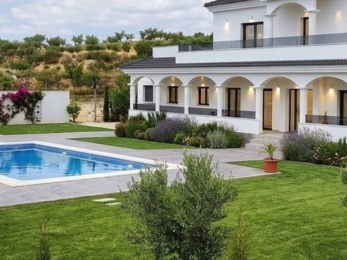
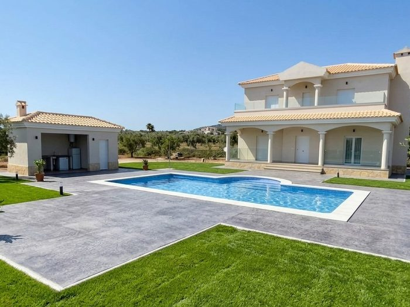
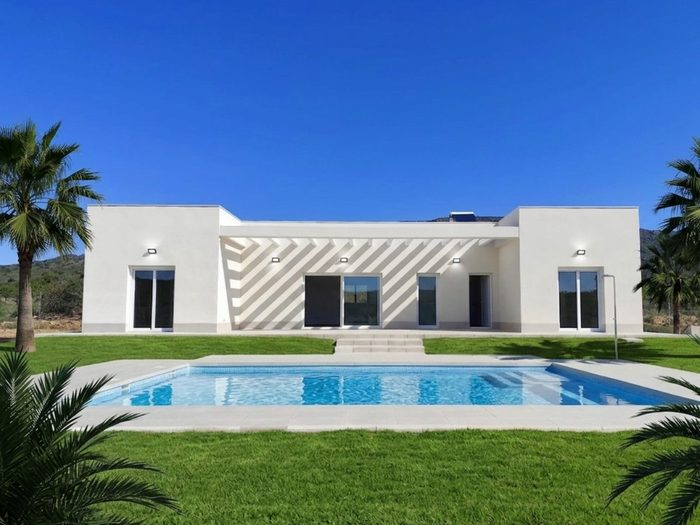
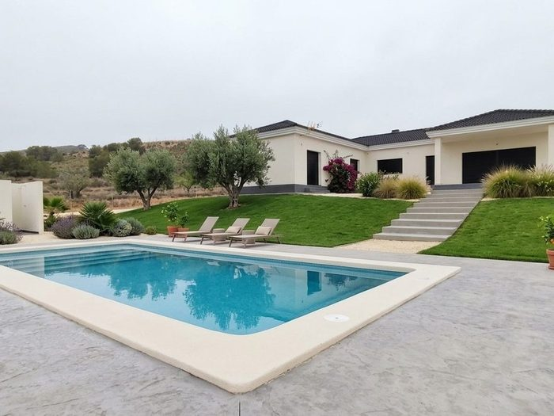
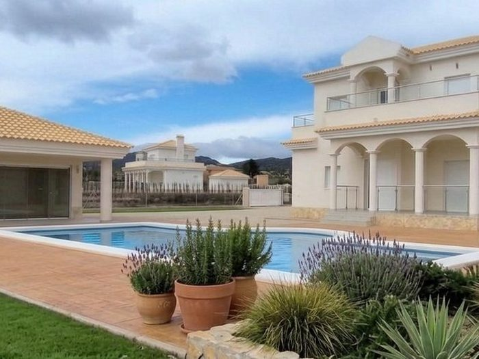
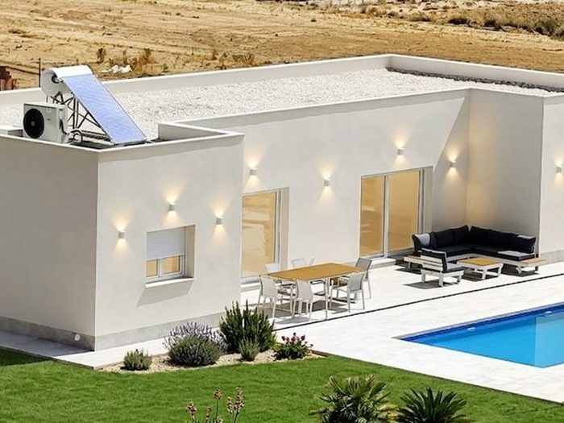
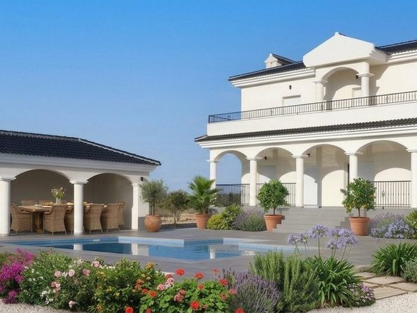
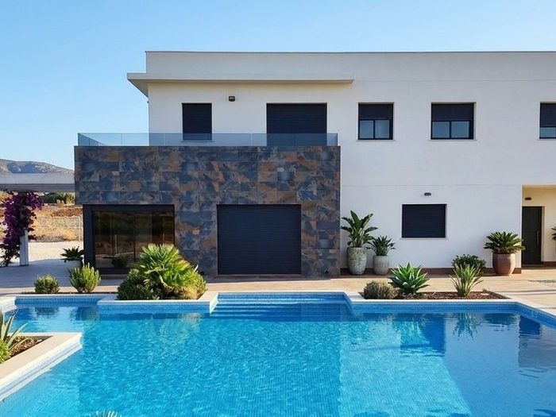
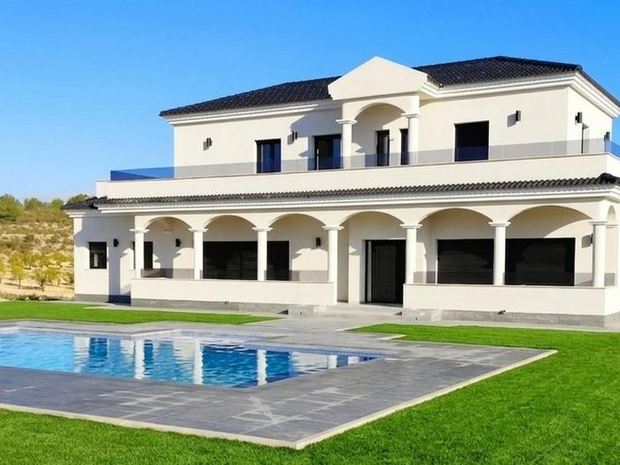
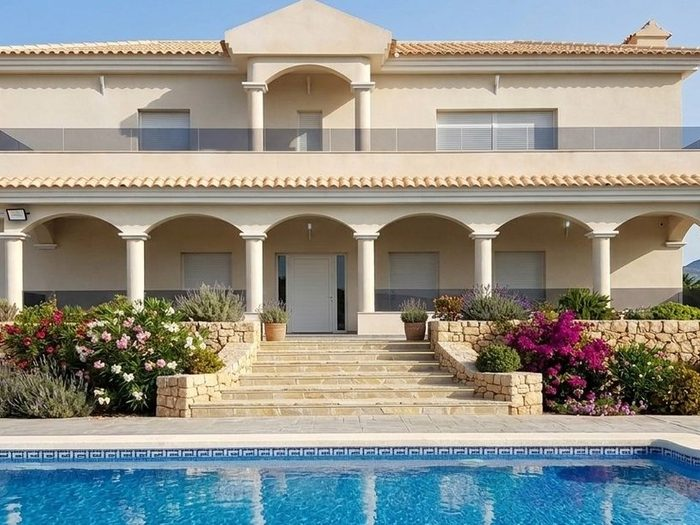
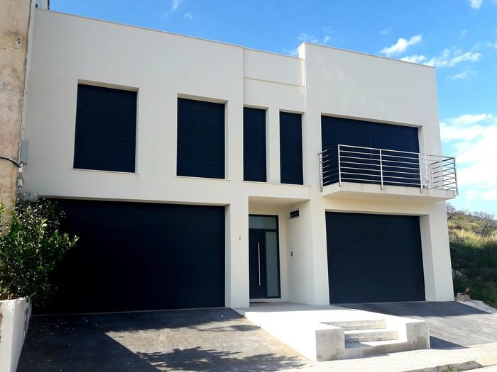
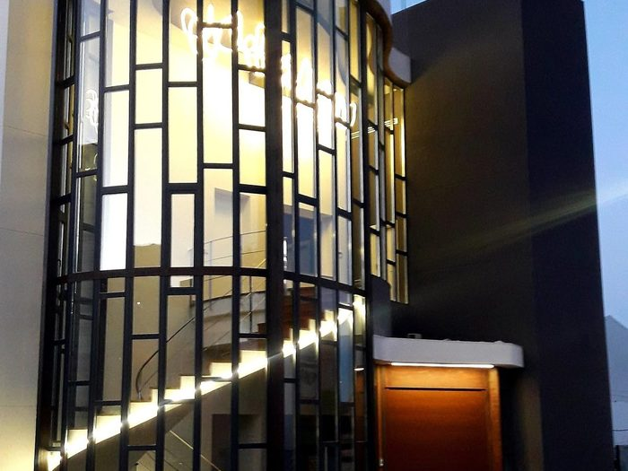
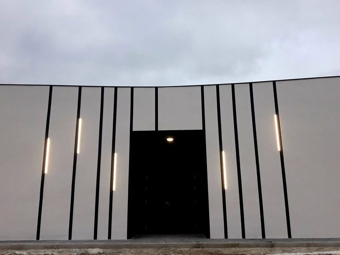
Lunes a viernes: 8:30–20:30
Sábado y domingo cerrado.